阅读建议
这一页整理为更适合连续阅读的攻略版本。对应章节源文件：zelda-tp-ch7.html 生成。文中配套图片会通过站内本地路径提供，便于稳定阅读。
你可以通过侧边栏保持章节顺序，也可以随时切换中英文版本，对照阅读同一页面。
第 7 章
从时之迷宫出来后统治之杖会失去魔力。再次前去特尔玛的酒馆，得知夏德（Shad）也出去调查了，于是和阿雪等人谈话，再调查桌子上的地图，原来夏德最近去了卡卡里科村，于是前去找夏德了解最后一个镜子碎片的信息。

这一页整理为更适合连续阅读的攻略版本。对应章节源文件：zelda-tp-ch7.html 生成。文中配套图片会通过站内本地路径提供，便于稳定阅读。
你可以通过侧边栏保持章节顺序，也可以随时切换中英文版本，对照阅读同一页面。
从时之迷宫出来后统治之杖会失去魔力。再次前去特尔玛的酒馆，得知夏德（Shad）也出去调查了，于是和阿雪等人谈话，再调查桌子上的地图，原来夏德最近去了卡卡里科村，于是前去找夏德了解最后一个镜子碎片的信息。
林克在卡卡里科村南面雷那多的房子下面找到了夏德，他正在研究一座上古雕像，并且告诉林克，这个雕像肯定和空之居民有关，而伊莉娅的记忆里一定有关于这方面的消息，只要能让伊莉娅恢复记忆就一定能有所收获。回到雷那多的房间找他谈话，雷那多告诉林克自己或许有办法找回伊莉娅的记忆，不过必须先让林克帮自己送一封信到特尔玛的酒馆去。
回到特尔玛的酒馆，林克将雷那多的的信给特尔玛看了后，她表示自己也无法帮助伊莉娅恢复记忆，不过她知道有个人或许可以帮上忙，那就是住在城西的医生，另外她还给了林克一张医生欠钱的帐单，告诉林克把帐单给医生看了之后他就一定不会拒绝林克了。
特尔玛告诉林克医生的事情
在城西找到医生，林克将帐单给医生看过后，他也表示这种事情他不能帮上忙，不过可以提供点线索给林克，那就是伊莉娅的木雕，把它给伊莉娅看过后说不定能帮助她想起点什么，把房间的箱子推开，林克变成狼形态利用感知嗅到木雕的味道，然后可以一路追踪气味，结果气味将林克引向了特尔玛的猫，猫告诉林克，之前确实是它拿了木雕，不过前不久一群城南出没的野狗将木雕抢走了，要是想找的话去找那些野狗拿吧。如果在夜晚林克到城南的旷野上去的话就可以见到那群野狗，战胜他们后就能得到木雕了。
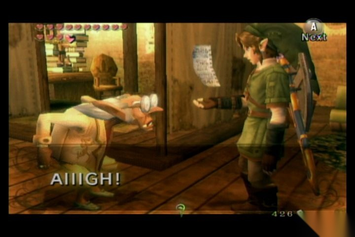
医生看到了账单却也没能提供太多的帮助
林克回到卡卡里科村，将木雕给伊莉娅看，果然让她回忆起了一点点细节，而戈隆人认出了这个木雕来自于一个隐秘的隐士之村，并答应帮林克打通通往那里的道路，查看地图得到前往村子的具体位置，然后前往村子。
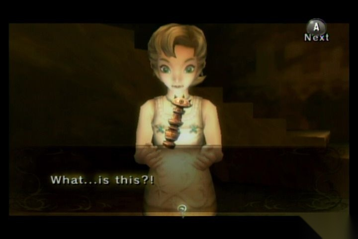
伊莉娅看到木雕，回忆出一些细节
来到了村子，林克却发现村里到处都充斥着兽人，首先要将这些兽人全部干掉。解决完总共 20 只兽人后，一个叫因帕兹的老妇人出现在了自己的房子外，将一个伊莉娅的符咒交给林克，并告诉他，这个东西一定可以帮助伊莉娅恢复记忆。
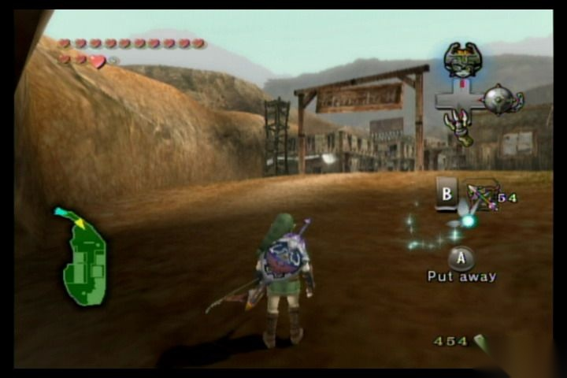
来到被兽人占领的隐士之村
林克带着伊莉娅的符咒回到卡卡里科村并将符咒给伊莉娅看了之后，伊莉娅果然完全恢复了记忆，她不但记起了和林克在一起的时候的事，也想起了关于天空城的一些事，但是她不是很清晰，不过她记得隐士之村的老妇人知道些关于天空城的具体情况。
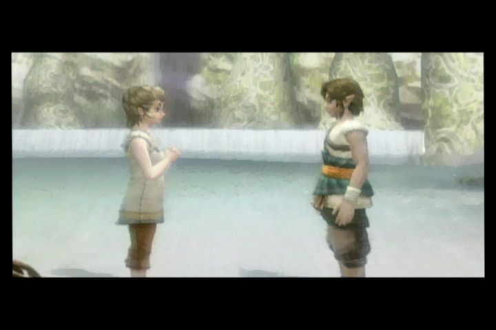
伊莉娅终于恢复了记忆
林克再次回到隐士村，将支配者权杖给老妇人看，她确定林克就是传说中自己一直在等待的人，她告诉林克其实这个村子是很久以前海拉尔的一位贵族建立的，当时预言将来当这个世界出现危机的时候会有一位手持支配力量的勇士来到这里，而老妇人就是世代守护这里的隐士的后代，之后便将古代天空之书交给林克，并告诉书上记载了关于天空城的一切。但是林克看不懂上面的文字，于是将古代天空之书带回卡卡里科村并交给夏德看，夏德看到书后兴奋异常，然后对前面的古代雕像念起了咒语，却什么也没发生，不过他告诉林克要仔细研究下这本书，随后告诉林克这本只写了一部分，要想到天空之城，必须收集齐全部的天空之书才能知道去天空城的方法，并将所有失落在海拉尔大陆的古代天空之书的位置标记在了林克的地图上。而支配权杖此时也重新获得了力量。

夏德告诉林克需要收集到全部的古代天空之书
第一本：第一本古代天空之书在南艾尔丁地区，就在从卡卡里科村出来朝左转不远的地方，有个山壁上有块石头，炸开后能看到一座上古雕像，用支配权杖将其移开林克得到第一本古代天空之书。
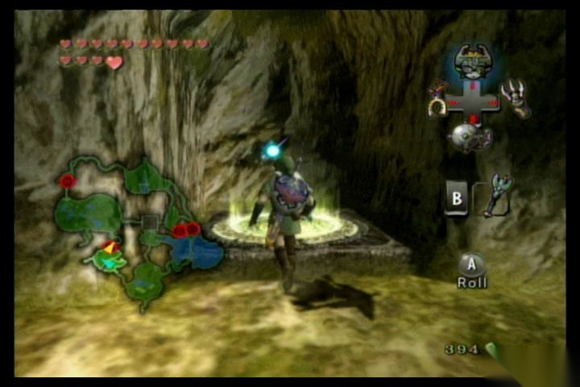
炸掉山壁上的石块，移开上古雕像，得到第一本古代天空之书
第二本：到艾尔丁大桥北部的，就在桥东面就有一个上古雕像，用权杖移开得到第二本。
第三本：第三本就在海拉尔城东出来沿路走的尽头的废墟处，操纵雕像放在雕像本来放置的柱子和旁边的看台中间，然后可以从跳台上跳过去取得。
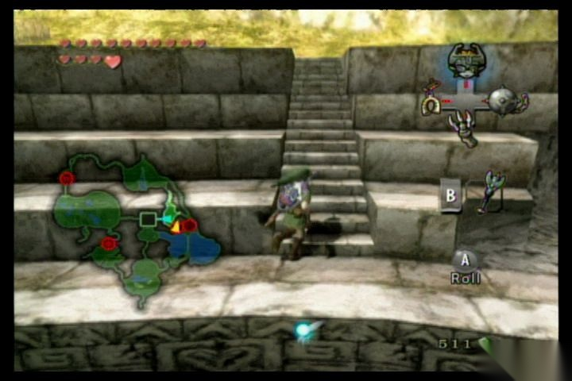
在废墟看台附近得到第三本古代天空之书
第四本：第四本在海利亚湖上大桥的北部，一个半高的山洞里，将雕像移下来后，再用飞爪上去，落在移下的雕像上再过去取得。
第五本：在沙漠南部可以找到第五个上古雕像，移开后拿到第五本古代天空之书。
最后一本：最后一本书在卖灯油的科洛那里朝右边的岔路进去可以找到，将雕像移出来到不远处地上的一个洞处还可以搭起一条通往上面的路，在米德娜的帮助下可以上去取得一块 心之碎片 37。
找齐全部的古代天空之书后，林克将天空之书带回卡卡里科村村给夏德看，他会念出咒语让前面的雕像能被支配权杖操控，移开它后见到了一门冲天炮，此时与夏德谈话将他支出房间，然后在米德娜的帮助下将冲天炮传送到海利亚湖。
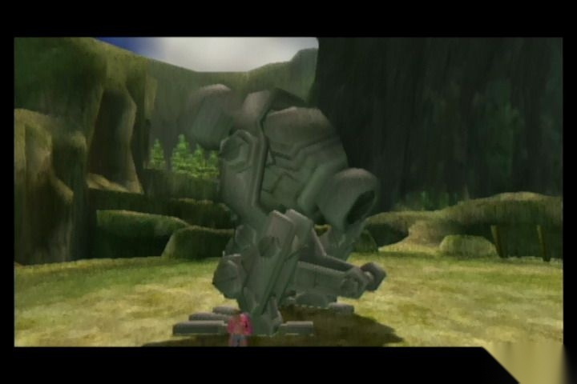
巨大的冲天炮，需要送到海利亚湖去维修
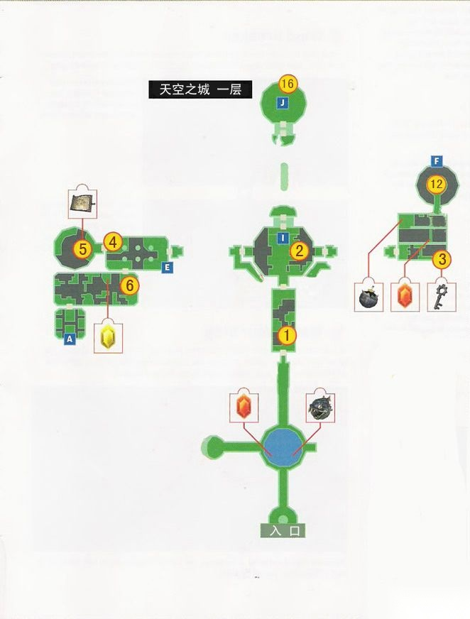
天空之城迷宫第一层地图

天空之城第二层地图
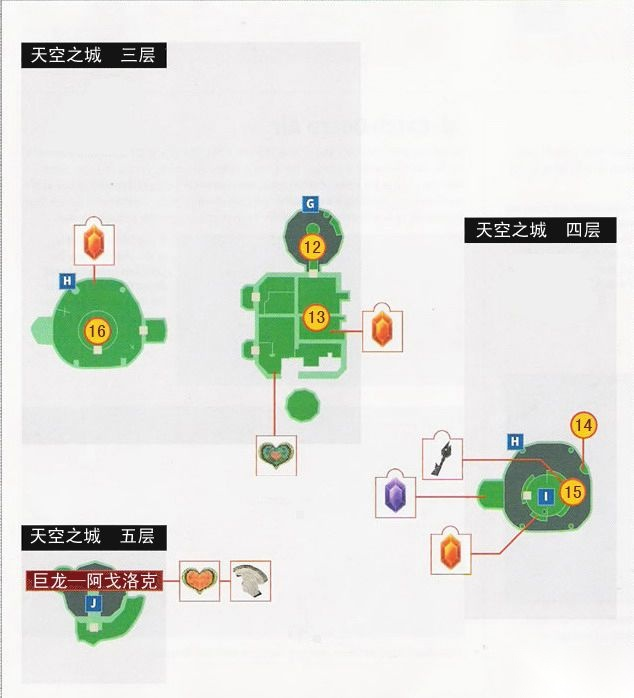
天空之城第三层到第五层地图
来到天空城，林克在北边不远见到个池塘，水里有一个炸弹和卢比，西边的房间是欧库的商店，这里可以得到欧库。之后回到外面向北前进，要注意在起风的时候是有被吹下去的危险的，而且在起风的时候是不能用弓箭的，攻击门上面的机关可以打开大门，然后朝北进入房间 1。
房间 1：注意地上的蓝色地砖，踩到后会掉下去，抓一只欧库可以方便过去，朝北面进入房间 2。
房间 2：先去东面的门，出去到阳台朝右走，可以用飞爪抓藤条过去，并发现一个用陀螺仪的机关，打开后东面的桥会伸过来，过去后到房间 3。
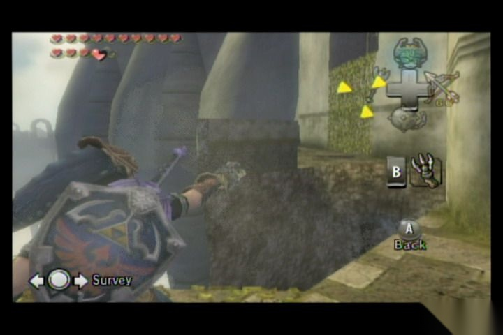
利用飞抓抓住对面的藤条过去
房间 3：从右边用飞爪过去可以到对面取得小钥匙，然后返回房间 2，过桥后龙会把桥撞断，之后进房间 2 走西面的门出去。阳台左边又有一个陀螺仪机关，打开后会出现到房间 4 的桥，过去到房间 4。
房间 4：房间里有很多鼓风机，直接过去的话会被吹下去，首先去左边攻击状态转换开关关闭最里面的鼓风机，然后可以用穿钢之靴或者拿链子球通过第一个鼓风机，最后利用飞爪抓上藤条过第 2 个鼓风机，走房间西面的门到房间 5。
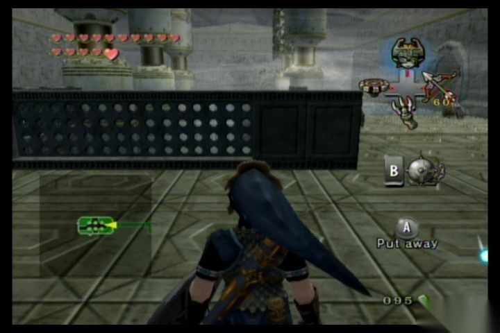
要小心不要被鼓风机吹下去
房间 5：在里面取得地图后返回房间 4，走西南的门到房间 6。
房间 6：注意要在风停的时候才能往前跳，还要小心地板下藏着的敌人，之后朝房间西南移动到房间 7。
房间 7：消灭掉房间内的所有怪后南面楼上的门会打开，用飞爪上去后再抓头顶的球状机关，可以将房间正中的鼓风机打开，抓一只欧库能飞到对面到房间 8。
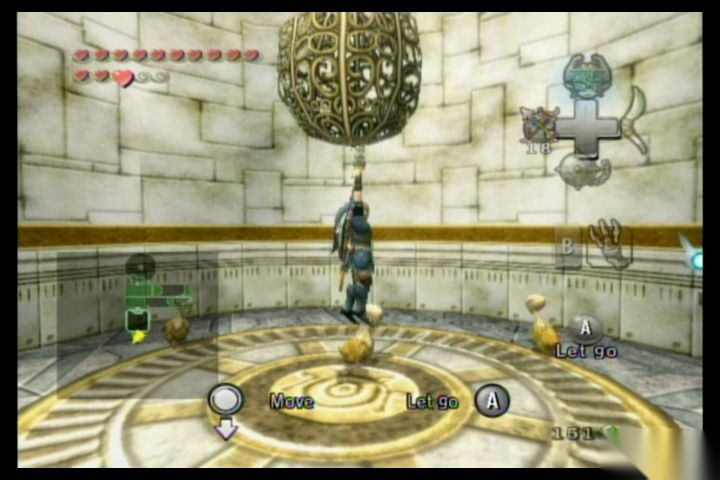
抓住头顶的球状机关打开鼓风机
房间 8：进门后利用欧库和房间里的鼓风机，朝房间东北飞过墙壁到房间 8 的上半部分，这里还有一个球形机关，打开后会启动对面的鼓风机，然后可以利用其进入对面 2 楼，通过房间西北角的门到房间 9。
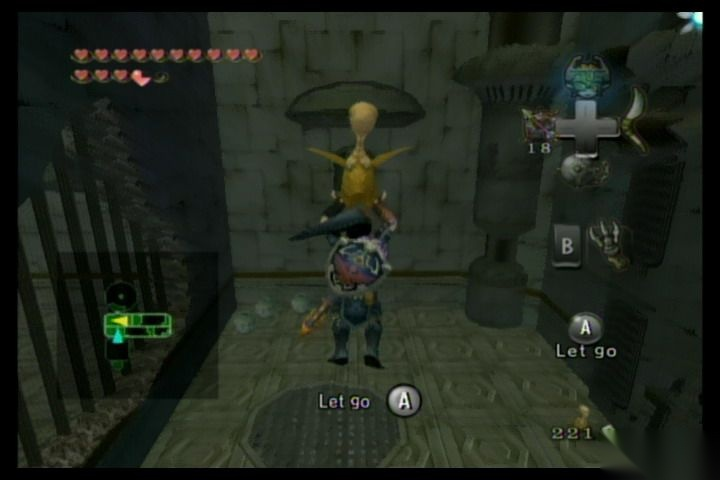
利用欧库和房间里的鼓风机，朝房间东北飞过墙壁到房间 8 的上半部分
房间 9：进门后处于房间的高层，下面有两个朝外吹的鼓风机，抓住一只欧库后向下跳，途中要注意两个鼓风机，一直朝最下层、最西面的门移动，除了用欧库，这里也可以用飞爪下去，之后进去房间 10 进行小 BOSS 战。
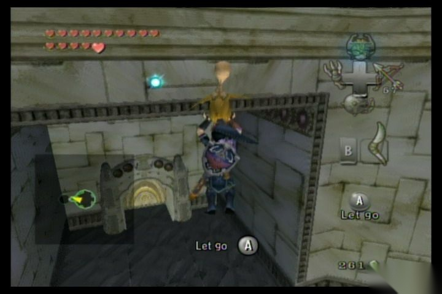
可以用欧库或者飞爪下去
房间 10：首先用飞爪拉下房间中的机关并穿上钢之靴令鼓风机停下，然后下去可以见到小 BOSS。小 BOSS 是一只机敏的龙人，普通情况下的弓箭、飞爪攻击都无法命中其，必须等到他准备攻击，也就是翅膀明显加快速度的时候，用飞爪把他抓过来攻击。之后他会到处乱飞，但是攻击方式不变，所以还是很好应对。战胜后去房间南边取得双飞爪（Double Clawshot）。然后从天花板上用双飞爪出去回到房间 9。

和小 BOSS——龙人——战斗
房间 9：利用双飞爪一路爬升，中途打开中间的球状开关，之后不要松手，否则门会复位，直接用双飞爪抓到门里面去，进入房间 11。
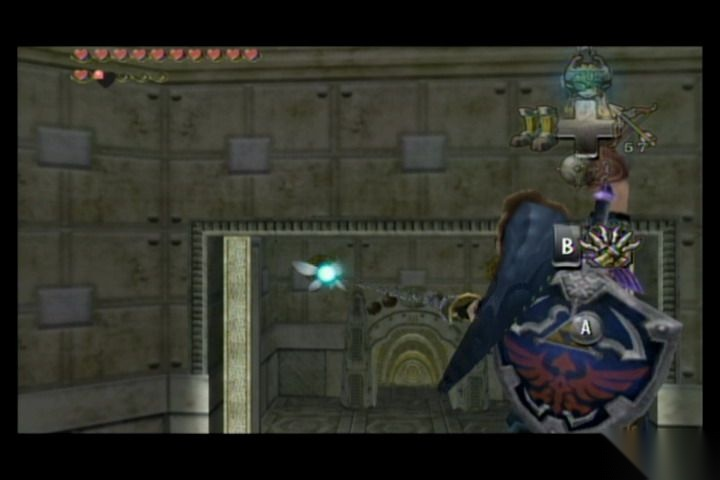
打开球状开关，然后直接利用飞爪进入打开的门里
房间 11：两边都有可以抓的地方，但是一旦抓上去后会慢慢滑落，所以要抓紧时间朝房间东面行动，出门后来到一座桥下方，这里利用下面的铁丝网朝桥东移动，途中注意先将铁丝网上的食人花用双飞爪打落，之后回到房间 2 东面的阳台上，这里可以用双飞爪抓天上直升机一样的植物通过断桥回到房间 3。
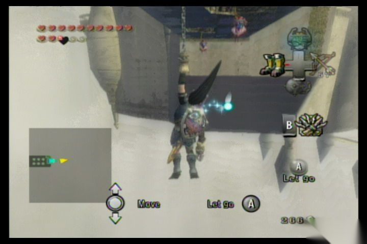
利用铁丝网向前移动，注意沿途的食人花
房间 3：利用双飞爪，从房间东面下到楼下，然后可以见到之前那种会滑落的机关，之后来到下面第三层的西面，朝西北方向用飞爪，注意天花板上的食人花要提前用飞爪打掉，之后攻击状态转换开关后进入大门，再用双飞爪一路向上回到东北的门进入房间 12。
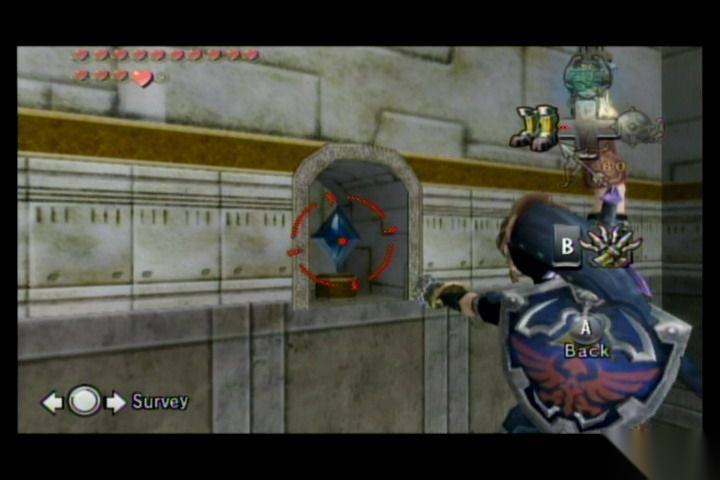
攻击转换开关以便进入大门
房间 12：进门后遇到一个大型食人花，干掉后朝上用飞爪上去，到 2F 以后沿着边缘小心前进，需注意的是到尽头的一段路要抓住台沿爬过去，后面可以取得 心之碎片 27。然后再继续用飞爪向上爬，达最顶层后从南面的门到房间 13。
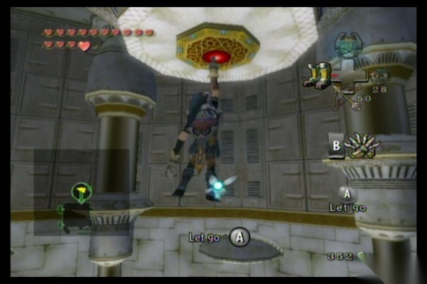
利用飞爪一路来到顶层
房间 13：利用空中的飞行植物一路朝西北方向前进，途中可以在最南面的平台上取得 心之碎片 28，然后进入西北的门到房间 14。
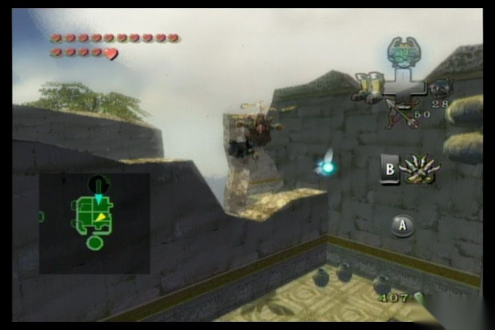
利用空中的飞行植物前进
房间 14：先从藤条上到房间上层，然后从右边沿着绳索一直到 2 层西面的门进入房间 15。
房间 15：关掉大型球状开关可关掉鼓风机并能取得大钥匙，然后从楼下关闭的鼓风机回到房间 2，这里暂时不要放掉飞爪，朝房间 2 北面门上的天花板处观察能发现机关，打开后会启动鼓风机并可以朝北面过去到达房间 16。
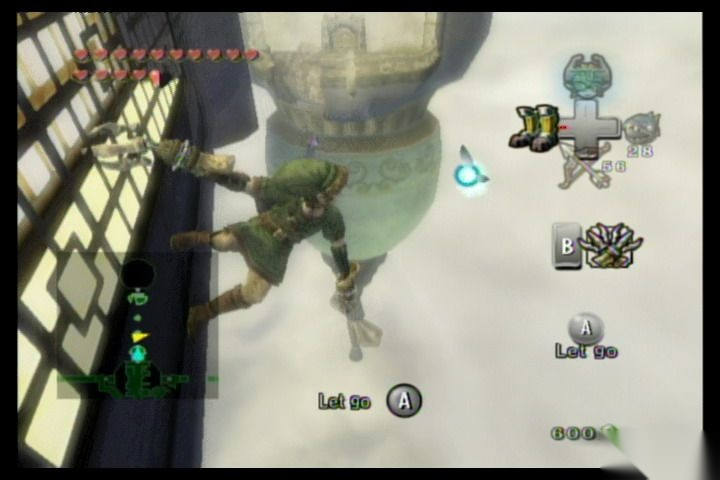
注意寻找鼓风机的机关
房间 16：这里首先会遇到两个龙人，战胜后将门上的状态转换开关打开，一直朝上可以上到最顶部见到最终 BOSS。
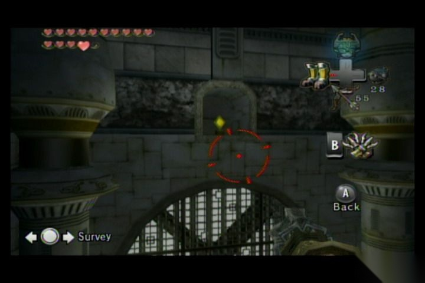
将转换开关打开
BOSS 战：巨龙——阿戈洛克（Twilit Dragon—Argorok）
首先向上爬到屋顶的平台，阿戈洛克会出现，第一阶段穿上钢之靴并抓它的尾部可以将其拽到地上并攻击其背后的水晶，几下之后阿戈洛克会飞到高处喷射火焰并且不再靠近林克，这时需要利用周围的几个柱子用飞爪朝上爬到最顶部，然后再向上抓飞行植物，之后阿戈洛克喷火时朝一个方向不停用飞爪移动到其背部，再用飞爪抓到背上攻击水晶，再几个回合之后，阿戈洛克会喷射两次火焰，注意在喷完第一次以后要反向用飞爪抓行到其背部进行攻击，最后击败阿戈洛克并取得第三块镜子碎片。
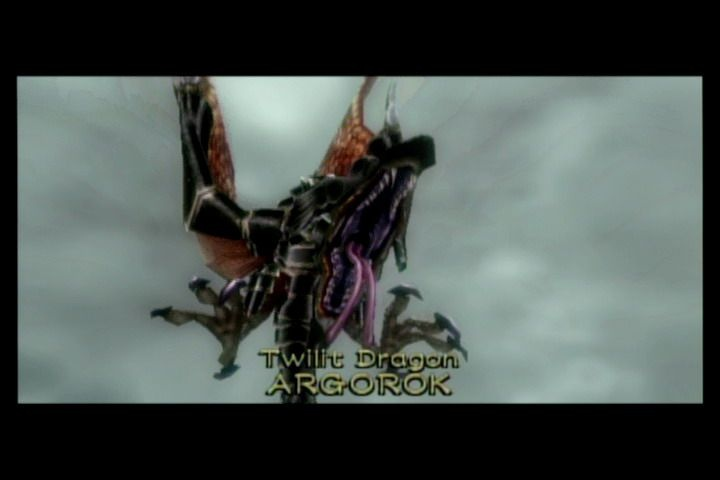
BOSS：巨龙——阿戈洛克（Twilit Dragon—Argorok）

与巨龙战斗
参考：
这套双语站保持稳定的阅读顺序，便于你按一致的节奏浏览 Twilight Princess 相关内容。
{kind=link}
{kind=link}
{kind=link}
{kind=link}
{kind=link}
{kind=link}
{kind=link}
{kind=link}
{kind=link}
{kind=link}
{kind=link}
{kind=link}
{kind=link}
{kind=link}
{kind=link}
{kind=link}
{kind=link}
{kind=link}
{kind=link}
{kind=link}
{kind=link}
{kind=link}
{kind=link}